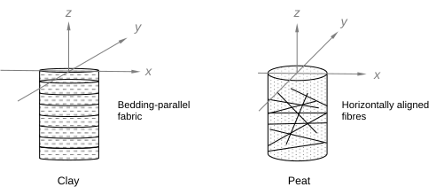

Ch3.1.1
Cross-anisotropy
The mechanical properties of sedimentary soils are inherently anisotropic, owing to their depositional history (Fig. 3.1.1): plate-like clay particles develop a bedding-parallel fabric under overburden whereas plant fibres tend to lie horizontally as the plants die.

Fig. 3.1.1 Schematics of inherent anisotropy in clay and peat, originated from their depositional structure
Soils formed in this way exhibit cross-anisotropic elasticity described via the eight elasticity parameters:
$$
\begin{bmatrix}
\delta\varepsilon_{xx}^e\\
\delta\varepsilon_{yy}^e\\
\delta\varepsilon_{zz}^e\\
\delta\gamma_{xy}^e\\
\delta\gamma_{yz}^e\\
\delta\gamma_{zx}^e
\end{bmatrix}
=
\begin{bmatrix}
\frac{1}{E_h} & -\frac{\nu_{hh}}{E_h} & -\frac{\nu_{vh}}{E_v} & 0 & 0 & 0\\
-\frac{\nu_{hh}}{E_h} & \frac{1}{E_h} & -\frac{\nu_{vh}}{E_v} & 0 & 0 & 0\\
-\frac{\nu_{hv}}{E_h} & -\frac{\nu_{hv}}{E_h} & \frac{1}{E_v} & 0 & 0 & 0\\
0 & 0 & 0 & \frac{1}{G_{hh}} & 0 & 0\\
0 & 0 & 0 & 0 & \frac{1}{G_{hv}} & 0\\
0 & 0 & 0 & 0 & 0 & \frac{1}{G_{vh}}
\end{bmatrix}
\begin{bmatrix}
\delta\sigma'_{xx}\\
\delta\sigma'_{yy}\\
\delta\sigma'_{zz}\\
\delta\tau'_{xy}\\
\delta\tau'_{yz}\\
\delta\tau'_{zx}
\end{bmatrix}
\tag{3.1.1}
$$
Here, the superscript $e$ denotes the elastic component. Among the eight elasticity parameters, five of them are independent after considering the following relationships:
$$\frac{\nu_{vh}}{E_v}=\frac{\nu_{hv}}{E_h} \tag{3.1.2}$$
$$G_{vh}=G_{hv} \tag{3.1.3}$$
$$G_{hh}=\frac{E_h}{2(1+\nu_{hh})} \tag{3.1.4}$$
Expressed in triaxial stress space, the relationship simplifies to:
$$
\begin{bmatrix}\delta\varepsilon_a^e\\\delta\varepsilon_r^e\end{bmatrix}
=
\begin{bmatrix}
\frac{1}{E_v}&-\frac{2\nu_{vh}}{E_v}\\
-\frac{\nu_{vh}}{E_v}&\frac{1-\nu_{hh}}{E_h}
\end{bmatrix}
\begin{bmatrix}\delta\sigma'_a\\\delta\sigma'_r\end{bmatrix}
\tag{3.1.5}
$$
To change the basis to $(\varepsilon_v^e,\varepsilon_d^e)$–$(p',q)$, the linear transformation is introduced:
$$
\begin{bmatrix}\frac{1}{3}&1\\\frac{1}{3}&-\frac{1}{2}\end{bmatrix}
\begin{bmatrix}\delta\varepsilon_v^e\\\delta\varepsilon_d^e\end{bmatrix}
=
\begin{bmatrix}
\frac{1}{E_v}&-\frac{2\nu_{vh}}{E_v}\\
-\frac{\nu_{vh}}{E_v}&\frac{1-\nu_{hh}}{E_h}
\end{bmatrix}
\begin{bmatrix}1&\frac{2}{3}\\1&-\frac{1}{3}\end{bmatrix}
\begin{bmatrix}\delta p'\\\delta q\end{bmatrix}
\tag{3.1.6}
$$
After collecting terms, the triaxial compliance, identical to the form given by Lings et al. (2000), is obtained:
$$
\begin{bmatrix}\delta\varepsilon_v^e\\\delta\varepsilon_d^e\end{bmatrix}
=
\begin{bmatrix}
\frac{1-4\nu_{vh}}{E_v}+\frac{2(1-\nu_{hh})}{E_h} & \frac{2}{3}\left\{\frac{1-\nu_{vh}}{E_v}-\frac{1-\nu_{hh}}{E_h}\right\}\\
\frac{2}{3}\left\{\frac{1-\nu_{vh}}{E_v}-\frac{1-\nu_{hh}}{E_h}\right\} & \frac{4(1+2\nu_{vh})}{9E_v}+\frac{2(1-\nu_{hh})}{9E_h}
\end{bmatrix}
\begin{bmatrix}\delta p'\\\delta q\end{bmatrix}
\tag{3.1.7}
$$
For simplicity, the anisotropy in both stiffness and Poisson’s ratio is here represented by a single parameter $\alpha$, but with different orders of strength, as assumed in Graham and Houlsby (1983):
$$\alpha^2=\frac{E_h}{E_v} \tag{3.1.8}$$
$$\alpha=\frac{\nu_{hh}}{\nu_{vh}} \tag{3.1.9}$$
Upon simplification, the relationship is described by the three parameters $(E_v,\nu_{vh},\alpha)$:
$$
\begin{bmatrix}\delta\varepsilon_v^e\\\delta\varepsilon_d^e\end{bmatrix}
=
\begin{bmatrix}\frac{1}{K^*}&\frac{1}{J^*}\\\frac{1}{J^*}&\frac{1}{3G^*}\end{bmatrix}
\begin{bmatrix}\delta p'\\\delta q\end{bmatrix}
\tag{3.1.10}
$$
where
$$K^*=\frac{\alpha^2}{(1-4\nu_{vh})\alpha^2-2\nu_{vh}\alpha+2}E_v \tag{3.1.11}$$
$$J^*=\frac{3}{2}\frac{\alpha^2}{(1-\nu_{vh})\alpha^2+\nu_{vh}\alpha-1}E_v \tag{3.1.12}$$
$$G^*=\frac{3}{2}\frac{\alpha^2}{2(1+2\nu_{vh})\alpha^2-\nu_{vh}\alpha+1}E_v \tag{3.1.13}$$
A full compliance consistent with the three-parameter cross-anisotropy is described as:
$$
\begin{bmatrix}
\delta\varepsilon_{xx}^e\\\delta\varepsilon_{yy}^e\\\delta\varepsilon_{zz}^e\\
\delta\gamma_{xy}^e\\\delta\gamma_{yz}^e\\\delta\gamma_{zx}^e
\end{bmatrix}
=\frac{1}{\alpha^2E_v}
\begin{bmatrix}
1&-\alpha\nu_{vh}&-\alpha^2\nu_{vh}&0&0&0\\
-\alpha\nu_{vh}&1&-\alpha^2\nu_{vh}&0&0&0\\
-\alpha^2\nu_{vh}&-\alpha^2\nu_{vh}&\alpha^2&0&0&0\\
0&0&0&2(1+\alpha\nu_{vh})&0&0\\
0&0&0&0&2(1+\nu_{vh})\alpha&0\\
0&0&0&0&0&2(1+\nu_{vh})\alpha
\end{bmatrix}
\begin{bmatrix}
\delta\sigma'_{xx}\\\delta\sigma'_{yy}\\\delta\sigma'_{zz}\\
\delta\tau'_{xy}\\\delta\tau'_{yz}\\\delta\tau'_{zx}
\end{bmatrix}
\tag{3.1.14}
$$
Here, the remaining independent parameter $G_{vh}$ is estimated, following Graham and Houlsby (1983), as:
$$G_{vh}\simeq\frac{\alpha E_v}{2(1+\nu_{vh})} \tag{3.1.15}$$
The derived relationships reduce to the familiar isotropic form in the limit $\alpha\to1$ (i.e., $E_v=E_h=E$ and $\nu_{hh}=\nu_{hv}=\nu_{vh}=\nu$):
$$K^*\to\frac{E}{3(1-2\nu)} \tag{3.1.16}$$
$$J^*\to\infty \tag{3.1.17}$$
$$G^*\to\frac{E}{2(1+\nu)} \tag{3.1.18}$$
$$G_{hv}\to\frac{E}{2(1+\nu)} \tag{3.1.19}$$
Thus, the volumetric-deviatoric coupling vanishes for isotropic elasticity (i.e., $1/J^*\to0$).